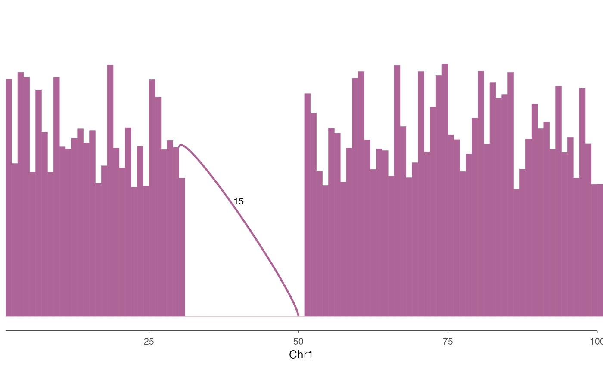

This function creates a sashimi plot combining coverage tracks with splice junction arcs.
It is commonly used for RNA-seq data to visualize both read coverage and splicing events.
Supports the same flexible input types as ez_coverage.
Usage
ez_sashimi(
coverage_data,
junction_data,
region = NULL,
gene = NULL,
gene_db = NULL,
org_db = NULL,
extend = 0.1,
extend_type = c("proportion", "bp"),
track_labels = NULL,
colors = NULL,
coverage_fill = NULL,
junction_direction = c("alternate", "up", "down"),
junction_curvature = 0.05,
height_factor = 0.05,
alpha = 1,
score_transform = c("identity", "log10", "sqrt"),
linewidth_range = c(0.1, 1.5),
show_labels = TRUE,
label_size = 3,
label_color = "black",
y_axis_style = c("none", "simple", "full"),
facet_label_position = c("top", "left"),
border = FALSE,
show_legend = FALSE,
...
)Arguments
- coverage_data
Coverage input: a GRanges object, data frame, character vector of file paths, or named list of data sources. Same input types as
ez_coverage. When a named list is provided, each element becomes a separate faceted track.- junction_data
Junction input that must match the structure of coverage_data:
If coverage_data is a single source (GRanges, data.frame, or file path), junction_data must also be a single source.
If coverage_data is a named list, junction_data must be a named list with the same names.
- region
Genomic region to display (e.g., "chr1:1000000-2000000"). Either
regionorgene(withgene_db) must be provided.- gene
Gene name/symbol to look up (e.g., "PTPRC", "TP53"). When provided, the region is automatically determined from the gene coordinates in
gene_db. Eitherregionorgenemust be provided.- gene_db
TxDb object for gene coordinate lookup when using
geneparameter.- org_db
Optional OrgDb object for gene symbol mapping. If NULL (default), auto-detects available OrgDb packages.
- extend
Numeric. Amount to extend the region beyond the gene body when using
geneparameter. Default: 0.1 (10% of gene length on each side).- extend_type
How to interpret
extend: "proportion" (relative to gene length) or "bp" (absolute base pairs). Default: "proportion".- track_labels
Optional vector of track labels (used for unnamed list input)
- colors
Color(s) for coverage fill and junction arcs. Can be a single color or a vector of colors for multiple tracks. If fewer colors than tracks are provided, colors will be recycled. When NULL (default), uses vibeColors palette if available, otherwise a built-in default.
- coverage_fill
Deprecated. Use
colorsinstead.- junction_direction
Direction of junction arcs: "alternate" (default, odd junctions up, even down), "up" (all arcs above coverage), or "down" (all arcs below zero line)
- junction_curvature
Curvature of junction arcs (0-1). Higher values create more pronounced curves. Default: 0.05
- height_factor
Height of arcs as proportion of genomic distance span. Higher values create taller arcs. Default: 0.05
- alpha
Transparency for both coverage and junction arcs (0-1). Default: 1
- score_transform
Transformation for junction scores when mapping to line width: "identity" (no transformation), "log10", or "sqrt". Default: "identity"
- linewidth_range
Range of line widths for junction arcs, mapped from score. Default: c(0.1, 1.5)
- show_labels
Logical, whether to show score labels at arc centers. Default: TRUE
- label_size
Font size for score labels. Default: 3
- label_color
Color for score labels. Default: "black"
- y_axis_style
Y-axis style: "none", "simple", or "full". Default: "none"
- facet_label_position
Position of facet labels: "top" or "left" (default: "top"). Only applies when using multiple tracks via named list input.
- border
Logical. If
TRUE, adds a black border around the plotting panel (default: FALSE)- show_legend
Logical. If
TRUE, displays the legend (default: FALSE)- ...
Additional arguments passed to geom_coverage
Details
Sashimi plots combine two visual elements:
Coverage track: Shows read depth across the region as a filled area
Junction arcs: Connect splice donor and acceptor sites, with line width proportional to the number of supporting reads (score)
For "up" direction, arc endpoints are positioned at the coverage height at those positions. For "down" direction, arcs extend below the zero line. The "alternate" mode assigns alternating directions to junctions sorted by start position, which helps reduce visual overlap.
Junction scores are mapped to line width using the specified transformation. Use "log10" or "sqrt" for data with wide score ranges to prevent very thick lines.
For multi-track visualization, provide named lists for both coverage_data and junction_data with matching names. Each track will be displayed as a separate facet with its own coverage and junction arcs.
Examples
# Basic sashimi plot
coverage <- data.frame(
seqnames = "chr1", start = 1:100, end = 2:101,
score = c(runif(30, 5, 10), rep(0, 20), runif(50, 5, 10))
)
junctions <- data.frame(
seqnames = "chr1", start = c(30), end = c(50), score = c(15)
)
ez_sashimi(coverage, junctions, "chr1:1-100")

# Multi-track sashimi plot with named lists
cov_list <- list("Sample1" = coverage1, "Sample2" = coverage2)
#> Error: object 'coverage1' not found
junc_list <- list("Sample1" = junctions1, "Sample2" = junctions2)
#> Error: object 'junctions1' not found
ez_sashimi(cov_list, junc_list, "chr1:1-100", colors = c("purple", "orange"))
#> Error: object 'cov_list' not found